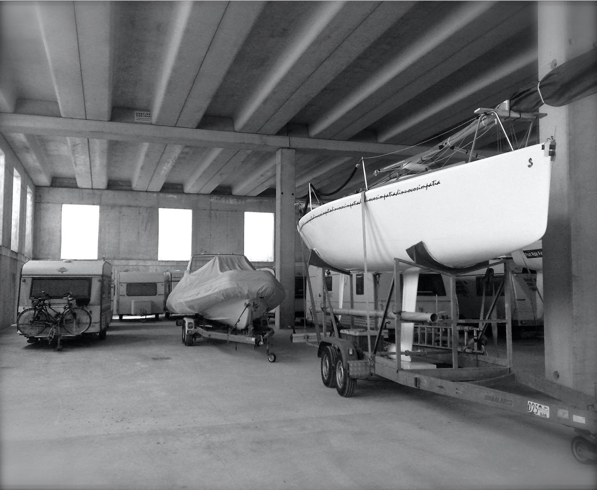
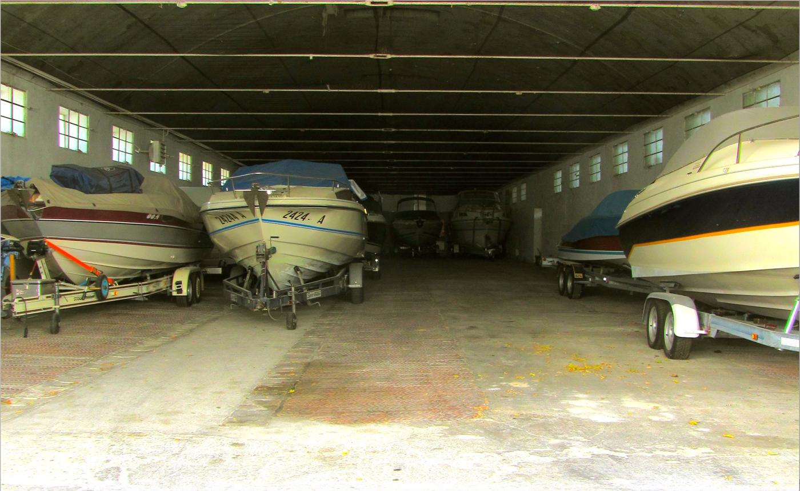
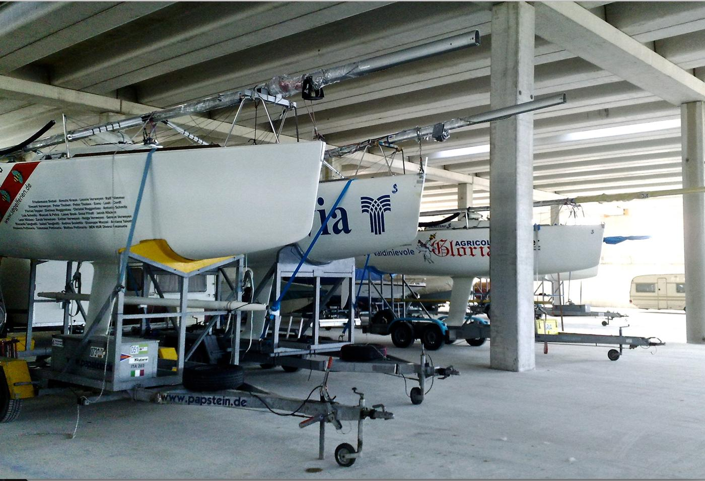
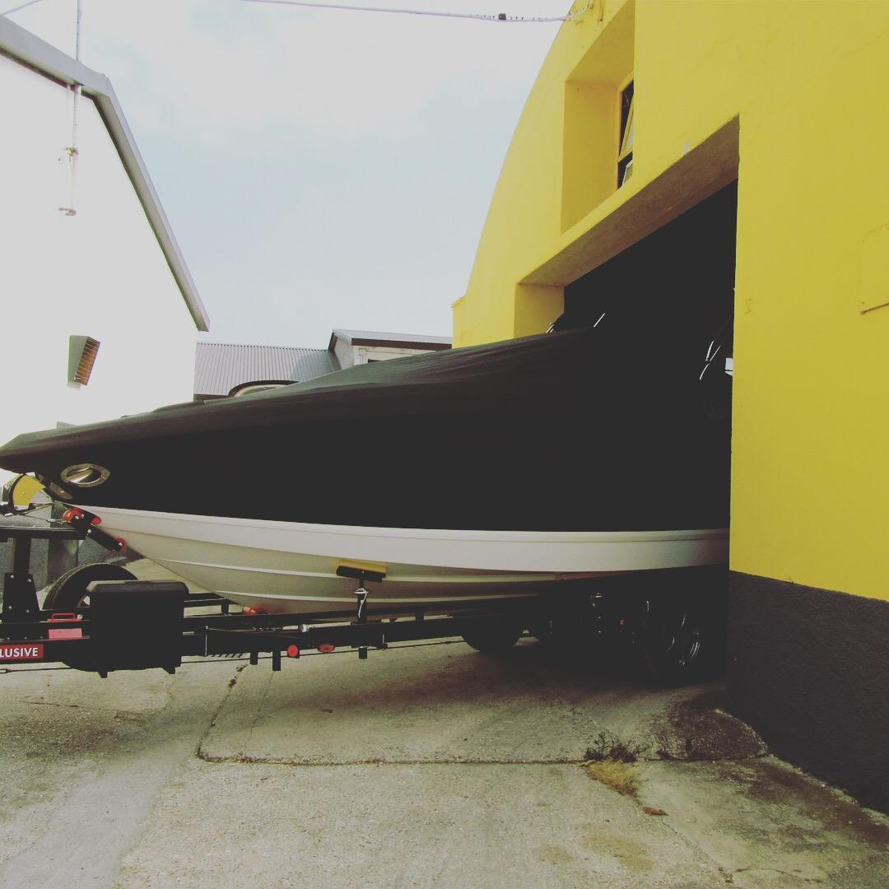
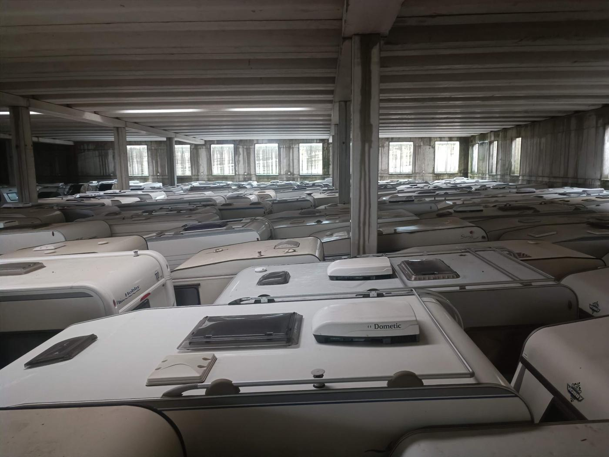
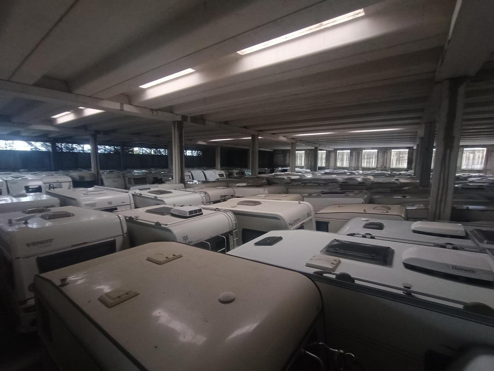

Roulotte e barche al coperto, sul lago di Garda.
Rimessaggio invernale in capannoni chiusi a Cavaion Veronese e Rivoli Veronese. Assicurato, con accessi controllati, gestito da una famiglia.
Quando puoi ritirare il mezzo
Dal 1° aprile al 1° ottobre il deposito è aperto: ritiri e riconsegni il mezzo quando vuoi, con una settimana di preavviso. Nel resto dell'anno il mezzo riposa al coperto.
- gen
- feb
- mar
- apr
- mag
- giu
- lug
- ago
- set
- ott
- nov
- dic
Solo posti al coperto
Non abbiamo posti all'aperto: ogni mezzo sta dentro un capannone chiuso, all'asciutto e al riparo da sole, grandine e umidità. Siamo uno dei più grandi depositi coperti per caravan e barche del lago di Garda.
Incluso nella quota annuale
- AssicurazioneFurto, incendio, fulmine e scoppio, atti vandalici, eventi atmosferici e danni da spostamenti nell'area di ricovero.
- 1 lavaggio standardLo facciamo al primo ritiro di ogni stagione.
- 2 uscite per stagioneRitiri e riconsegni il mezzo tra aprile e settembre. Dalla terza uscita si pagano 50 € ciascuna.
Accessi. Controllo automatizzato degli accessi all'interno della proprietà.
Dentro i capannoni






Quanto costa
Quota annuale per il parcheggio invernale. IVA inclusa.
Come si diventa cliente
- ScriviciDicci che mezzo hai e quanto è lungo. Ti rispondiamo con prezzo e disponibilità.
- Contratto e documentiServono un documento d'identità in corso di validità, il libretto del mezzo e la firma del contratto.
- AccontoCon l'acconto (di norma 50 €) il posto è tuo.
- Porti il mezzo per l'invernoSaldo entro il 30 settembre, poi riconsegni il mezzo entro il 1° ottobre.
- Lo ritiri in primaveraDal 1° aprile avvisaci una settimana prima: lo trovi pronto fuori dal capannone, dalle 8:30.
Due sedi tra Cavaion e Rivoli Veronese
Ti diciamo noi in quale sede si trova il tuo mezzo.
Camporengo · Cavaion Veronese
Via Galileo GalileiLocalità Camporengo, 37010 Cavaion Veronese (VR)
Anche queste sono della famiglia
Altre attività nei dintorni:
- Agriturismo Corte Patrizia
- Cà de l'Angelon
- Residenza Campirenghi
- La Ghianda Experience
- Azienda agricola Casalmenini